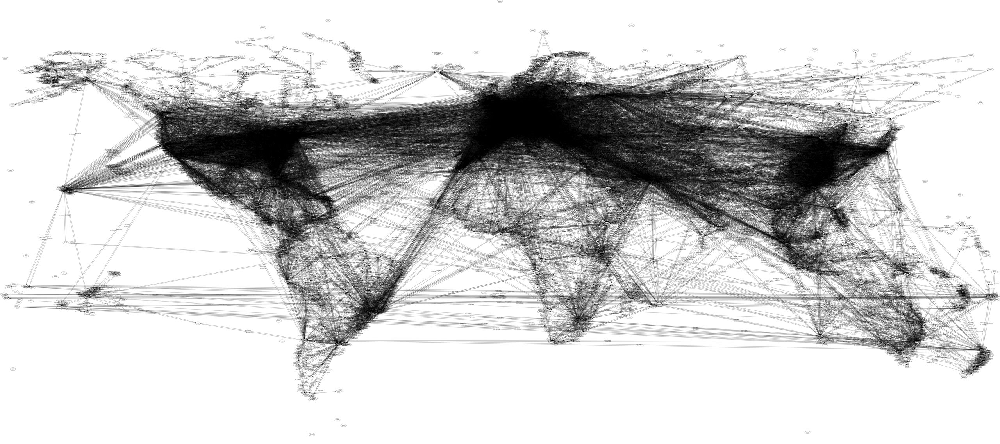

Flight Path Simulator
Implemented an object-oriented program in C++ that finds the most efficient travel path between any two airports contained in the OpenFlights Database and is graphically represented using a map API. Created a graph data structure to represent the connections between the 10,000 airports. Used a combination of a Depth First Search traversal and Dijkstra's algorithm to find the most efficient travel path, and used a PageRank algorithm to find the most important airport.
Read More